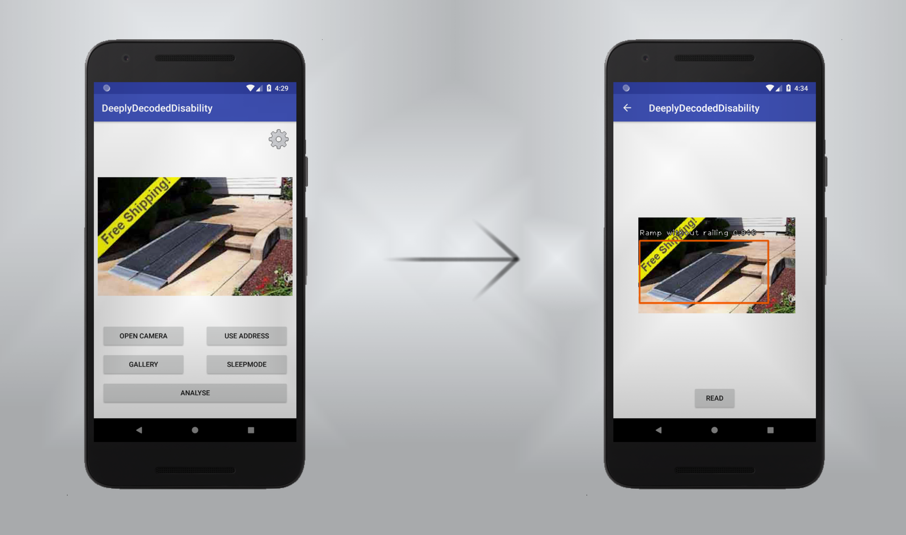
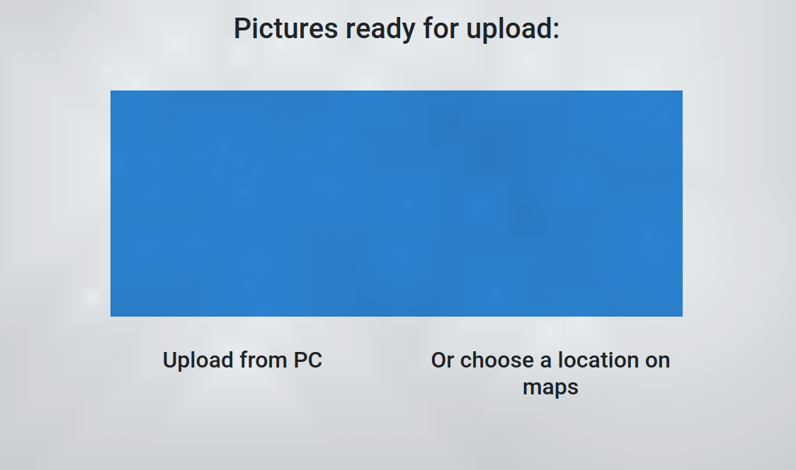

<div id="whatiscarousel" class="carousel slide" data-ride="carousel" data-interval="false">

    <!-- the "pages" the carousel has -->
    <ul class="carousel-indicators">
        <li data-target="#whatiscarousel" data-slide-to="0" class="active"></li>
        <li data-target="#whatiscarousel" data-slide-to="1"></li>
        <li data-target="#whatiscarousel" data-slide-to="2"></li>
        <li data-target="#whatiscarousel" data-slide-to="3"></li>
    </ul>

    <!-- the contents the "pages" have -->
    <div class="carousel-inner">
        <div class="carousel-item active">
            
            <div class="carousel-caption text-light" style="background: rgba(64, 87, 104, 0.6)!important;">
                <h3>Deeply Decoded Disability</h3>
                <h5>A deep neural network designed to<br>pinpoint disabled routes</h5>
            </div>   
        </div>
        <div class="carousel-item">
            
            <div class="carousel-caption text-light" style="background: rgba(64, 87, 104, 0.6)!important;">
                <h3>Load pictures</h3>
                <h4>or select a location</h4>
            </div>   
        </div>
        <div class="carousel-item">
            
            <div class="carousel-caption text-light" style="background: rgba(64, 87, 104, 0.6)!important;">
                <h3>Mark ramps, lifts</h3>
                <h4>or disabled parking spaces</h4>
            </div>   
        </div>
        <div class="carousel-item">
            
            <div class="carousel-caption text-light" style="background: rgba(64, 87, 104, 0.6)!important;">
                <h3>Try online right now!</h3>
            </div>   
        </div>
    </div>

    <!-- the controllers (left/right arrows) -->
    <a class="carousel-control-prev" href="#whatiscarousel" data-slide="prev">
        <span class="carousel-control-prev-icon"></span>
    </a>
    <a class="carousel-control-next" href="#whatiscarousel" data-slide="next">
        <span class="carousel-control-next-icon"></span>
    </a>
</div>